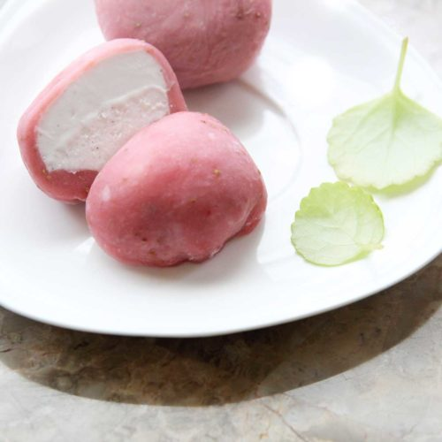
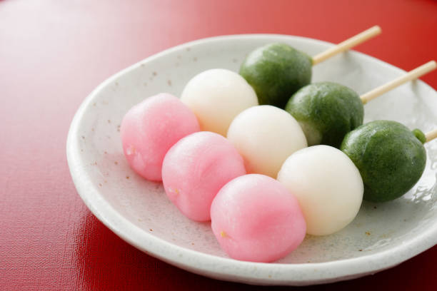
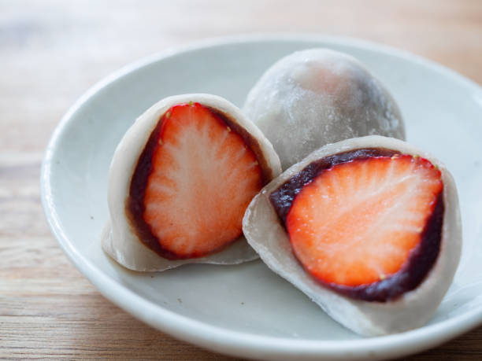

Моти
Моти (мочи) - японская сладость в виде колобка или лепешки, сделанная из рисового теста.
Это совершенно особые сладости, отличающиеся от привычных нам западных десертов. Их можно назвать самыми «старыми»
японскими десертами. При этом их популярность только растет.

Это моти. Познакомьтесь. (рис.1)

Это данго. Познакомьтесь. (рис.2)
Данго
Данго (яп. 団子) или оданго (яп. お団子) — японские клёцки или колобки из клейких сортов риса. Обычно их надевают на палочку и
покрывают пастой анко, мукой кинако, либо жарят. Похожи на моти. Под Новый год принято вешать дома 12 данго, символизирующие 12
месяцев, на сухие ветки в качестве пожелания благополучия. Отсюда пошла поговорка «Лучше данго, чем цветы» (яп. 花より団子 хана ёри
данго, русский аналог - „соловья баснями не кормят“).
Дайфуку
Дайфукумоти (яп. 大福餅) или дайфуку (яп. 大福) (букв. «большая удача») — японская сладость, небольшая рисовая лепёшка с начинкой,
чаще всего — с анко, сладкой пастой из бобов фасоли адзуки.
Дайфуку раньше назывались харабуто моти (яп. 腹太餅, моти с толстым животом), позже название сменили на дайфуку моти (яп. 大腹餅),
где кандзи поменяли местами. Из-за того, что произношение слова живот (яп. 腹 фуку) и богатство (яп. 福 фуку) в японском одинаково,
название стали записывать как «моти большой удачи» (яп. 大福餅 дайфуку моти). В конце XVIII века дайфуку стали очень популярны, их
начали жарить. Дайфуку использовали в качестве подарка по официальным поводам.

Это дайфуку. Познакомьтесь. (рис.3)